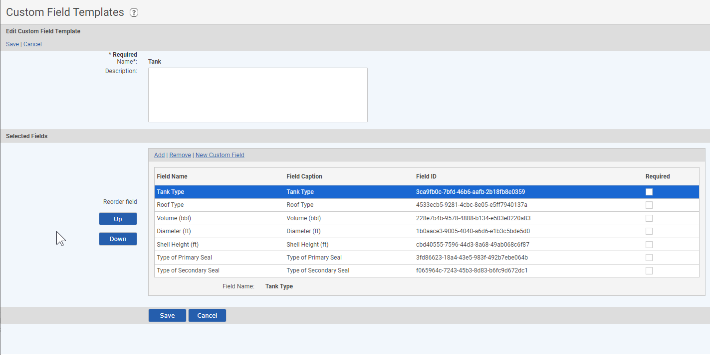
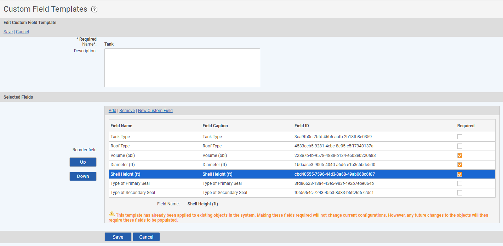

A Custom Field Template defines a group of custom fields that can be applied to system model objects. You can define different Custom Field Templates to meet your own business information needs and to fit your system model.
Custom fields may be re-used in different Custom Field Templates, but only one Custom Field Template can be applied to any object.
To create a new Custom Field Template:
Select New Custom Field Template.
Or right click anywhere in the Custom Field Templates library and select New.
Enter a Name for the template and a Description.
The Name appears on the properties form for objects using the template, as the section label for the custom fields. The description is only seen in the Custom Field Templates list, and may help users identify the purpose of the template.
Select Add to add fields to the template.
In the selection window, browse or use the search to find and select the fields to add to the template. Check the checkbox for the fields you want and click Select Fields.
To create a new custom field to add to the template, click Create New Custom Field. (See Create/Edit Custom Fields.) After the new field is created, you will be returned to the template edit screen and the new field will appear in the Selected Fields list.
The order in which the fields appear will be the display order on the properties form for the objects to which the template is applied. To re-order the fields, select a field and click the Up or Down button.

Custom Fields, will have the following columns displayed:
Filed Name: Name of the Field that will display on the template.
Field Caption: A brief description for the related Field Name.
Field ID: A unique ID provided for each field. This ID is useful as a reference point for the specific field of interest.
Required: This a checkbox column that can be selected for fields that are required to be filled for a template to be saved. Once checkboxes are selected in the Required column, a prompt appears “This template has already been applied to existing objects in the system. Making these fields required will not change current objects. However, any future changes to objects will require these fields to be populated.

Any templates that you open to edit will now have a warning message that there are required fields that need to be filled in, to save the template.
Templates that were filled in prior to making changes to fields are required will not be effected, until you edit an object with the updated Custom Field Template.
After the template is applied to an object, field values may be entered (in create or edit mode) on the properties form for an object to which it is applied.
You can edit a Custom Field Template in order to add new fields or remove unnecessary fields. When you edit a Custom Field Template, the changes are applied to all objects with which that template is associated, as follows:
To modify a Custom Field Template:
Right click the template in the Custom Field Templates list and select Edit.
On the template form, make the desired changes.
To add a field, select Add. In the selection window, browse or use the search to find and select the fields to add to the template. Check the checkbox for the fields you want and click Select Fields.
To create a new custom field to add to the template, click Create New Custom Field. (See Create/Edit Custom Fields.) After the new field is created, you will be returned to the template edit screen. The new field will appear in the Selected Fields list.
To remove a field, select the field in the list and click Remove.
To change the field order, select a field and click the Up or Down button to change its position.